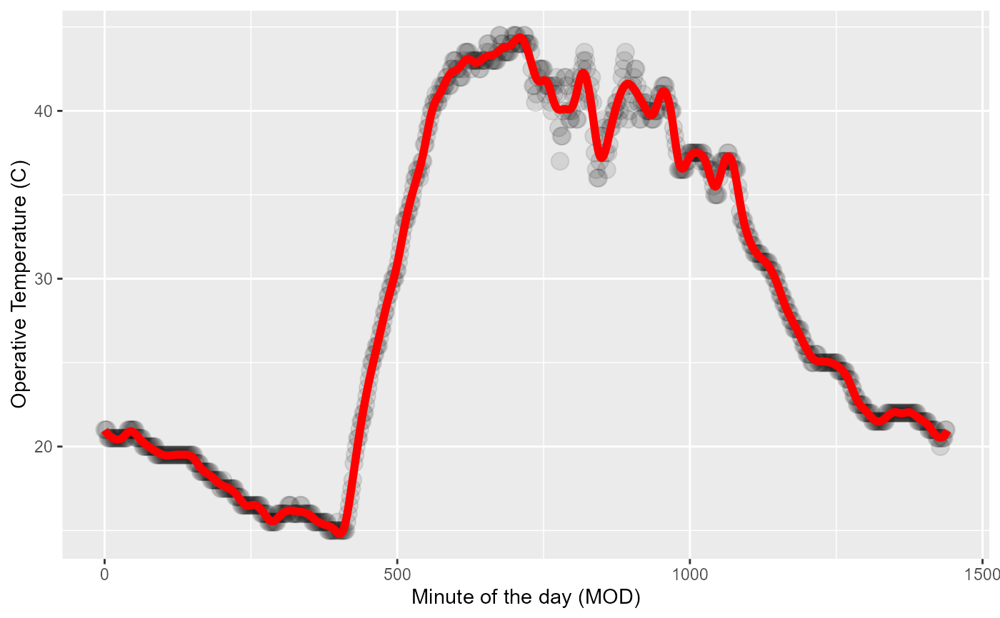

Generate OTM splines
gen_otm_splines.RdGenerate a unique spline model for each OTM on each date (Julian) while the OTM was measuring
Arguments
- otm_data
An OTM data
tibbleobtained via the functionrnp_otms_data.- knot_p
The number of knots the spline model should have to describe the temperature dynamics of the OTM for a given day taken as a percentage of the total number of operative measurements in a given day.
Value
A nested data frame (tibble) with columns for otm_id,
year, doy and spline. The spline column is nested and
contains a OTM, year and DOY smooth.spline model with the specified
number of knots.
Examples
# generate mock data
temps <- c( 10, 12, 14, 16, 18, 20, 22, 24, 25, 24, 22, 20, 18, 16, 14, 12,
10, 8, 6, 5, 4, 3, 2) + rnorm(23, 0, sd = 4)
otm_data_ex <- data.frame(otm_id = rep("A",23),
year = rep(1912,23),
doy = rep(200,23),
mod = seq(0,1380,length = 23),
op_temp = temps)
# calculate splines with 1, 0.5, 0.25 knots
otm_spline_ex_1 <- gen_otm_splines(otm_data_ex, knot_p = 1)
#> Generating OTM & doy-specific spline models...
#> Error in utils::txtProgressBar(min = 1, max = nrow(otm_splines), style = 3): must have 'max' > 'min'
otm_spline_ex_05 <- gen_otm_splines(otm_data_ex, knot_p = 0.5)
#> Generating OTM & doy-specific spline models...
#> Error in utils::txtProgressBar(min = 1, max = nrow(otm_splines), style = 3): must have 'max' > 'min'
otm_spline_ex_025 <- gen_otm_splines(otm_data_ex, knot_p = 0.25)
#> Generating OTM & doy-specific spline models...
#> Error in utils::txtProgressBar(min = 1, max = nrow(otm_splines), style = 3): must have 'max' > 'min'
# sequence of minutes of the day to predict
mods <- seq(0,1440,1)
# plot
plot(otm_data_ex$mod, otm_data_ex$op_temp, cex = 19,
xlab = "Minute of the day (mod)", ylab = "Operative temperature (°C)")
lines(mods, predict(otm_spline_ex_1$spline[[1]], mods)$y, lty = 1)
#> Error in eval(expr, envir, enclos): object 'otm_spline_ex_1' not found
lines(mods, predict(otm_spline_ex_05$spline[[1]], mods)$y, lty = 2)
#> Error in eval(expr, envir, enclos): object 'otm_spline_ex_05' not found
lines(mods, predict(otm_spline_ex_025$spline[[1]], mods)$y, lty = 3)
#> Error in eval(expr, envir, enclos): object 'otm_spline_ex_025' not found
legend("topright", legend = c("1 knot", "0.5 knots", "0.25 knots"),
lty = 1:3, cex = 0.8)
